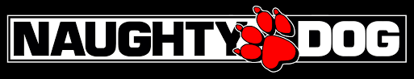
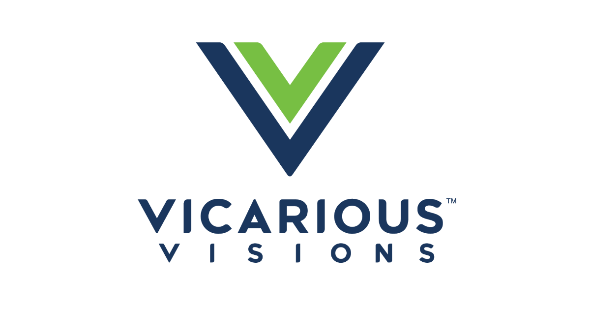
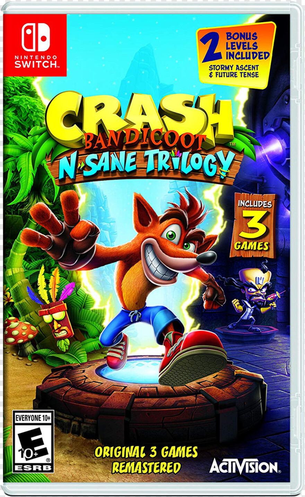

Crash Bandicoot

Crash
Secundarios
Lore
Crash mesmo sendo um experimento falho ainda era um intrumento do doutor N.Cortex, mas por "sorte" conseguiu fugir do laboratório de N.Cortex parando em uma praia salvo pela máscara aku aku, que o guiara na sua jornada de coletar gemas e wumpas(maçã, mangua) para salvar Tawna e acabar com os planos de N.Cortex.

Desenvolvedora

A Naughty Dog, LLC é uma desenvolvedora norte-americana de jogos eletrônicos sediada em Santa Mônica, Califórnia. Foi fundada em setembro de 1984 pelos então estudantes colegiais Andy Gavin e Jason Rubin como JAM Software, sendo renomeada para seu nome atual alguns anos depois em 1989, conhecida por grande nomes que marcaram gerações como Crash Bandicoot e sucessos mundiais como The Last of Us e Uncharted, hoje pertence a empresa Activisio.
Desenvolvedora do Remaster

Vicarious Visions é uma desenvolvedora de jogos eletrônicos estadunidense. Ela foi fundada pelos irmãos Karthik e Guha Bala quando estavam no colegial, por volta de 1990, que foi a responsável pelo remaster dos três jogos classicos da franquia Crash e coloca-los em um unico jogo "Crash Bandioot N.sane trilogy" e anos depois o remaster do Crash CTR "Crash bandicoot Racing Nitro-Fueled".
O Remaster

Crash 2
Em Crash 2 ou Crash Bandicoot 2:Cartex Strikes Back, Crash parte em uma aventura com sua prima Coco para pegar cristais para o doutor N.Cortex, que dir querer salvar o mundo, mas na verdade quer destruilo.

Crash Team Racing Nitro-Fueled
Crash Team Racing Nitro-Fueled ou CTR é um jogo de corrido do crash, onde um dia normal os personagens estavam fazendo suas coriidas de karts até que aparece Nitros Oxide, um alienigena que desafia o planeta para uma competição que custa a destruição ou salvação do planeta.
Crash 3
Crash 3 ou Crash Bandicoot 3:Warped, após os acontecimentos de Crash 2 onde os cristais foram destruidos no final, N.Cortex tem o plano de criar uma maquina de tempo para voltar em uma época os esses cristais ainda existiam e cabe Crash e Coco impedilo mais uma vez.
Sobre o Crash 4
A desenvolvedora Vicarious Visions obiviamente não gostaria de ficar conhecida pelos seus remasters de Crash, então em 16 de setembro de 2020 lançou Crash 4 It's about time, jogo que segue depois de N.Cortex e N.Tropy ficaram presos em outra dimenção, após diversas tentativas uka uka gasta toda sua energia para abrir uma fenda inter dimencional para N.Tropy e N.Cortex xontinuarem seus planos de dominar as varias dimenções.

Minha experiência com Crash
Para falar a verdade nunca joguei muito os classicos, pelo que me lembro joguei bem o Crash 2, muito pouco o 3 e o CTR por quê Crash não é um jogo muito facil para jogadores leigos, e dificil de entender o objetivo sem saber inglês. Fora esses dois jogos joguei alguns em Flash, que podem ser considerados memes nos dias de hoje, mesmo nunca tento jogado bem oe nunca tendo jogado os remasters nutro um leve sentimentos nostálgico do jogo em minha memórias.
😥By Professor Marcel "Vai ser só uma bricadeira" 141 linhas e 3 dias foram só brincadeira.😥